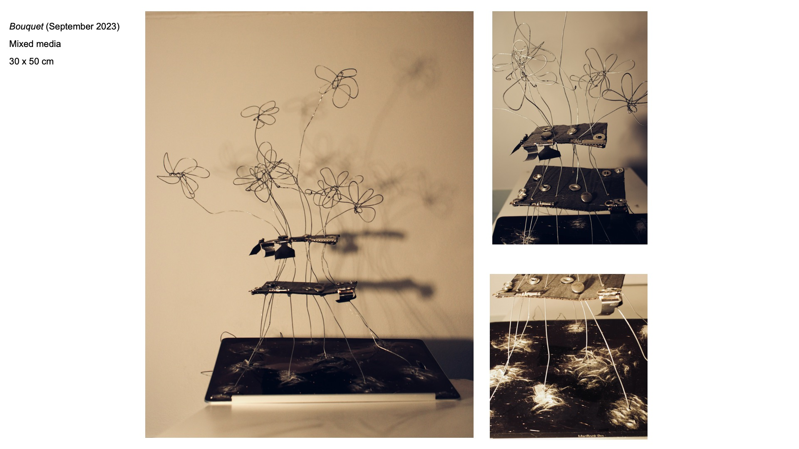
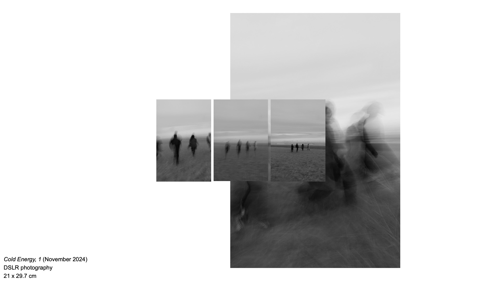

 (cd "$(git rev-parse --show-toplevel)" && git apply --3way <<'EOF' 
diff --git a/artfoundation.html b/artfoundation.html
index 9302bef9160246a8e3707890b1058bdc387095a0..9a49aa01d0822b11f2c2a3ad68c77c69d5033e0d 100644
--- a/artfoundation.html
+++ b/artfoundation.html
@@ -1,29 +1,43 @@
 <!DOCTYPE html>
 <html>
 <head>
   <link rel="stylesheet" href="style.css">
+  <style>
+    .project-image {
+      display: block;
+      width: 100vw;
+      height: 100vh;
+      max-width: 100%;
+      object-fit: contain;
+      margin: 0 auto;
+    }
+
+    .project-page {
+      width: 100%;
+    }
+  </style>
 </head>
 
 <body>
 
 <div class="project-page">
 
   <!-- TITLE -->
   <div class="project-header">
     Art + Design Foundation Year
   </div>
    <!-- META -->
   <div class="project-meta">
     2024 · painting / sculpure / fine art: photography
     
   </div>
   <!-- IMAGE IN FLOW -->
   
     </div>
 
   <!-- IMAGE IN FLOW -->
   
     </div>
 
   <!-- IMAGE IN FLOW -->
   
 
EOF
)
